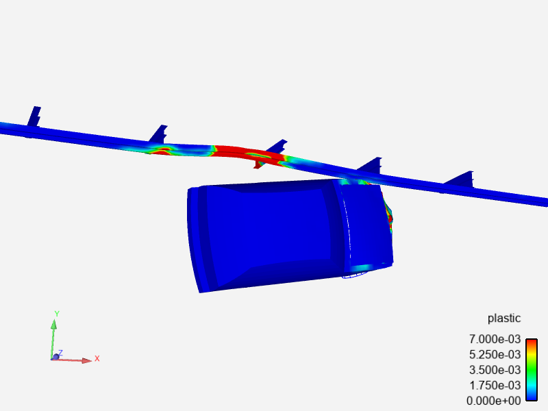
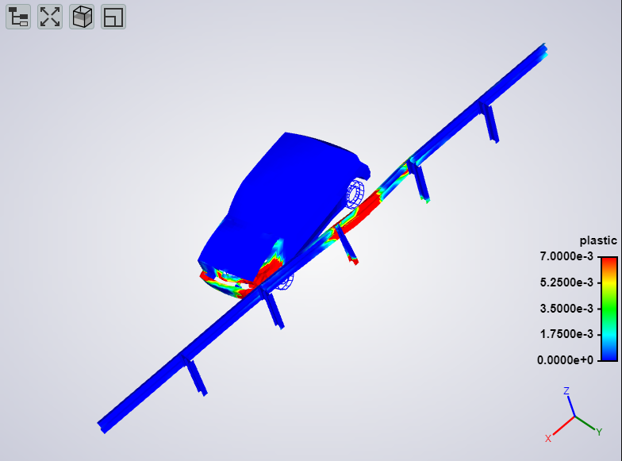
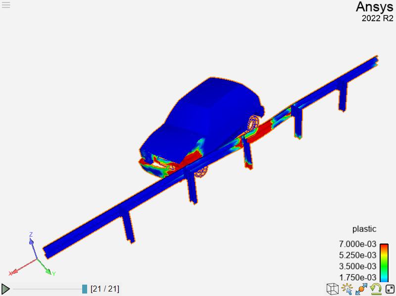
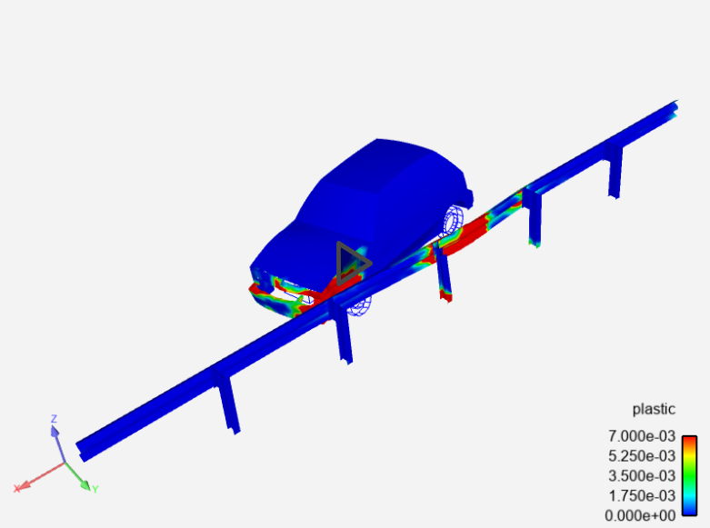

Note
Go to the end to download the full example code
Introducing Renderables#
EnSight is a simulation results post-processing engine with an advanced rendering and display component. PyEnSight provides direct, Jupyter notebook/lab aware access to the rendering component through Renderables. In this example, the variety of available Renderables is explored.
Start an EnSight session#
Start by launching and connecting to an instance of EnSight In this case, we use a local installation of EnSight
from ansys.pyensight import LocalLauncher
session = LocalLauncher().start()
Load a time varying dataset#
Load some data included in the EnSight distribution and apply a displacement variable to the parts and color them by a measure of plastic deformation.
session.load_data(f"{session.cei_home}/ensight{session.cei_suffix}/data/guard_rail/crash.case")
# Apply displacements
displacement = session.ensight.objs.core.VARIABLES["displacement"][0]
session.ensight.objs.core.PARTS.set_attr("DISPLACEBY", displacement)
# Color by the variable "plastic"
plastic = session.ensight.objs.core.VARIABLES["plastic"][0]
session.ensight.objs.core.PARTS.set_attr("COLORBYPALETTE", plastic)
# Adjust the palette range
plastic.LEGEND[0].RANGE = [0.0, 0.007]
session.ensight.view_transf.rotate(-36.0, 23.0, 0.0)
session.ensight.view_transf.fit(0)
Basic image#
Get an image renderable. If this is being run in a Jupyter IDE, the cell will display the png image. The image will be rendered at 800x600 pixels using 4 antialiasing passes.
image = session.show("image", width=800, height=600, aa=4)
Renderable.update()#
Renderables include several useful methods. The first is ‘update()’. Update will re-generate the renderable. Adjust the scene rotation and update the scene to update the display.
session.ensight.view_transf.rotate(10.0, 0.0, 0.0)
image.update()
Renderable.browser()#
All renderables display their results in web pages. The url to the web page is stored in the renderable url property and the “browser()” method can be called to display the result in a new browser tab.
print(image.url)
image.browser()
Renderable.download()#
The physical files that make up the renderable display reside in the container/system running the EnSight instance. They can be downloaded to the local system using the download() method. Note: for an “image” renderable, this is a png file, but it could be a tif, avz, evsn or other format file, depending on the type of the renderable.
local_directory_pathname = "."
image.download(local_directory_pathname)
Deep pixel image#

Get a deep pixel image renderable. A deep pixel image is a tiff format image that has the part names and currently displayed variable values included at each pixel. For full effect, it needs to be viewed in a web page.
deep_image = session.show("deep_pixel", width=800, height=600, aa=4)
Mpeg4 animations#

Create an animation renderable. This renderable is generated by rendering all the timesteps of the currently loaded dataset into an mpeg4 container. The size of the animation and the playback rate in frames/second may be specified in the show() call.
animation = session.show("animation", width=800, height=600, aa=2, fps=2.0)
WebGL 3D scene#
Create an 3D scene renderable and render it interactively in the web browser. The scene is generated in avz format, which is what the download() method would pull. By default, only the current timestep is captured, but if the temporal keyword is set, it can be over all timesteps. Note: the geometry is generated in the EnSight session and downloaded to the browser for display, so care should be taken when using this method with larger datasets.
webgl = session.show("webgl")
Direct interaction with EnSight#
Use remote rendering with dynamic pixel transport to interact directly with the EnSight session. The keyboard and mouse interactions are sent directly to EnSight in this mode. Note: this renderable relies on a persistent, low latency web socket connection to the EnSight session. It is most useful when the EnSight session container has access to hardware accelerated rendering and when datasets/geometry get larger. Multiple connections can be made to the same renderable (via HTTP). Those renderables are “shared” between all the viewers.
remote = session.show("remote")
Direct interaction with saved scene#
This renderable is basically a wrapper around an EnSight scenario file. The current scene is exported and includes all active parts/variables. The viewer is the EnVision application accessed through the same remote rendering system as the “remote” renderable. It shares many of the same benefits as the remote renderable, without the overhead of an EnSight server process. If downloaded, the saved file will be an EnVision evsn file.
remote_scene = session.show("remote_scene", width=800, height=600, temporal=True)
Exporting raw content#
The render() and geometry() Session methods are capable of returning the raw file data directly, without the use of a web browser. Included here are examples for a png image and a glTF glb file.
pngdata = session.render(1920, 1080, aa=4)
with open("simple_example.png", "wb") as fp:
fp.write(pngdata)
glbdata = session.geometry()
with open("simple_example.glb", "wb") as fp:
fp.write(glbdata)
Close the session#
Close the connection and shut down the EnSight instance
session.close()
Total running time of the script: ( 0 minutes 0.000 seconds)